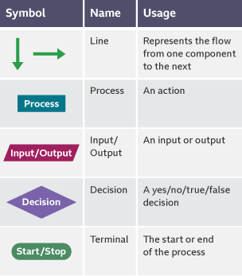

Developing Algorithms Using Flowcharts
Use draw.io to make flowcharts on a computer.
Introduction
Typically, you can't just start coding right away and require to plan.
You can do this by creating a
flowchartor by usingpseudocode.Flowcharts are diagrams that use symbols to represent the
flow of the program.
Standard Flowchart symbols
- : All the symbols needed.
 These are all the flowchart symbols you will need to know.
Usually in a
decisionyou will have a condition inside the box likeis x > yand then one of the lines out will sayYesand the other will sayNo.Inside of a
processyou will have some form ofassignmentordeclaration, likecount ← count + 1.
Identifier names
Just like in the python section, make sure your variables have meaningful variable names.
Don't call them
xoryas you might forget them.Give them names that will make sense to you like
sumortotal.